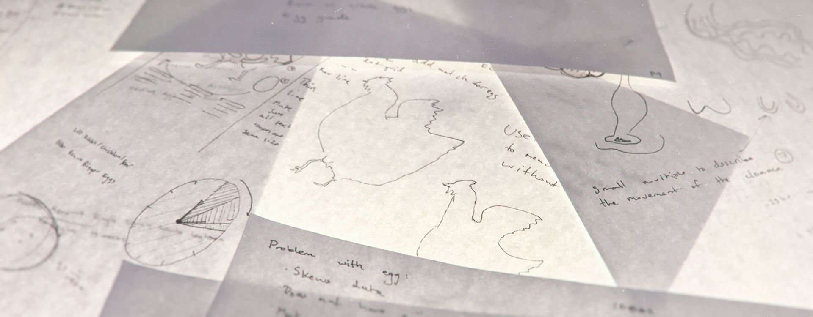

Overview
He was born on the serengeti to a pack of miniature giraffes. Raised through infancy by these tinny giants, he quickly honed his skills through cave painting and tool making
It was upon his arrival to the cold tundra known as RIT that he truly learned what d-zign is. It was here that he joined a hip-hop group, serendipitously knwon as the Tinny Giants.
Skills:
Skills are like bananas, good for you

The objective for this project was to create an infographic that focused on a recipe. I have always been fascinated by the simplicity and structural integrity of the egg, which lead to me to research nature's recipe for creating eggs.